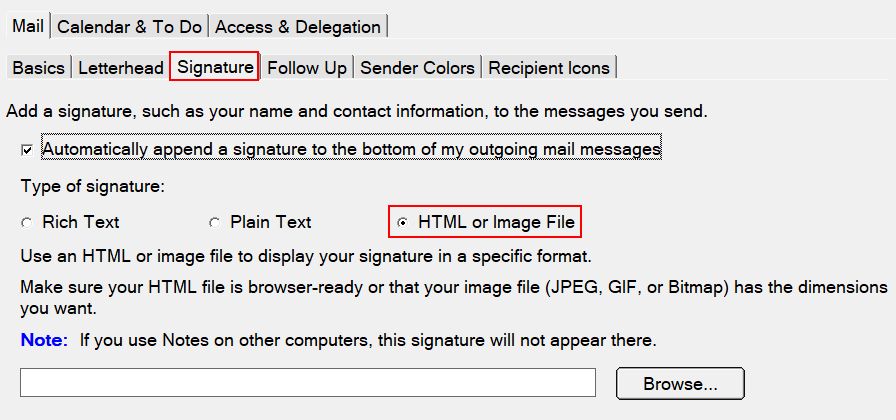
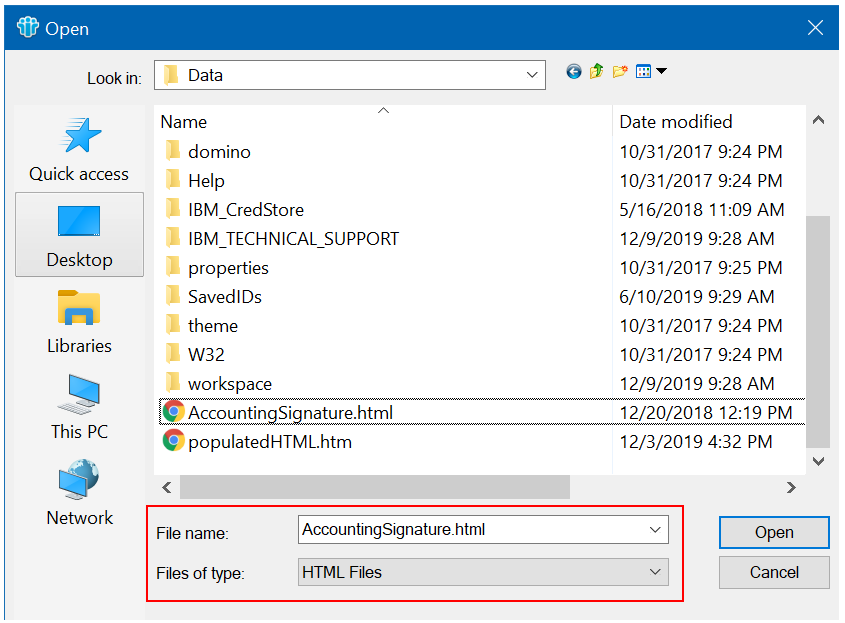
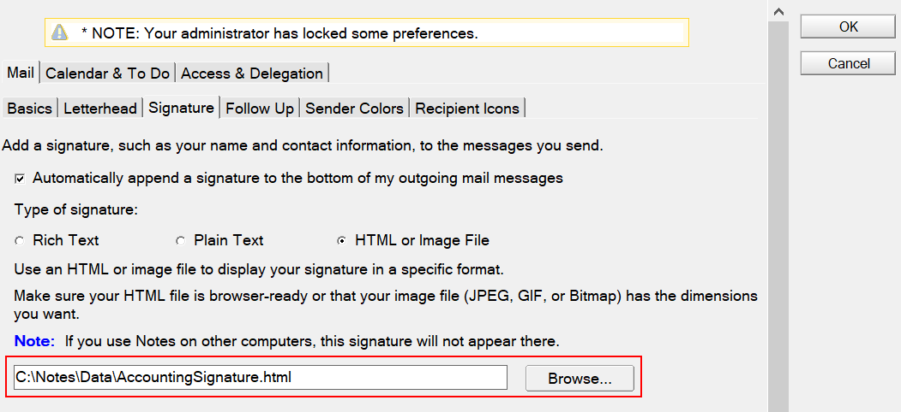
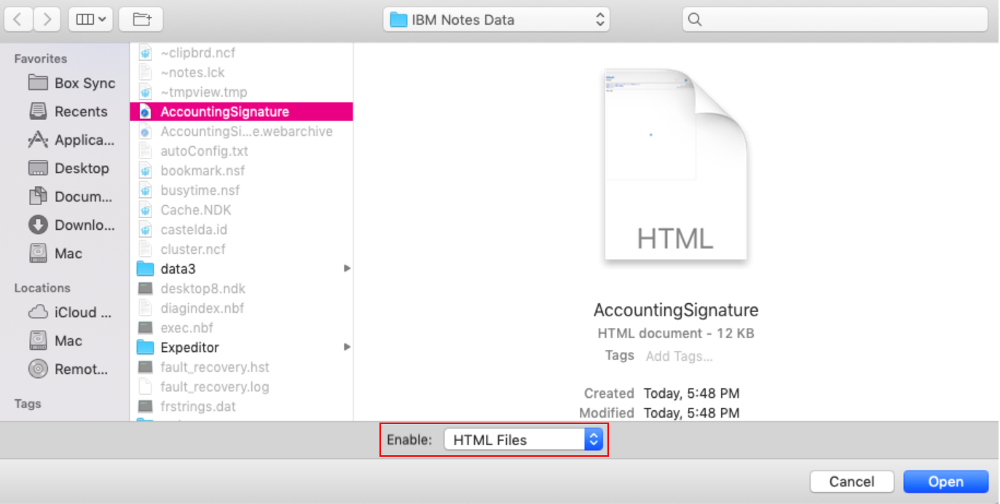
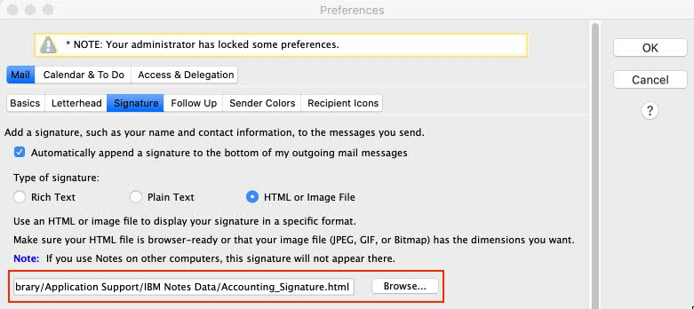

Steps to configure the signature in Lotus Notes mail |
Select Operating System: |
| Windows |
| macOS Mojave |
| macOS Catalina |
Windows |
| By now, you should have created your signature and stored it into C:\Notes\Data, so we are ready to configure it in Lotus Notes. |
1. To attach it in Lotus Notes mail, go to your mailbox and select "More / Preferences":


|
2. Then go to the "Signature" tab, select "HTML or Image File". Click "Browse":

3. Search for the file "AccountingSignature.html", ensure that "Files of type" is "HTML Files". Click "Open":

4. Once the "AccountingSignature.html" file is selected. Click "OK":

|
macOS Mojave |
|
At this time, you should have created and saved your signature in the “Documents” folder.
|
1. To attach it in Lotus Notes mail, go to your mailbox and select "More / Preferences":
2. Then go to the "Signature" tab, select "HTML or Image File". Click "Browse":
3. Search for the file "AccountingSignature.html", ensure that "HTML Files" is enabled. Click "Open":

4. Once the "AccountingSignature.html" file is selected. Click "OK":

|
macOS Catalina |
|
At this time, you should have created and saved your signature in the “Documents” folder.
|
1. To attach it in Lotus Notes mail, go to your mailbox and select "More / Preferences":
|
In order to setup your signature in macOS Catalina, go to the “Signature” tab, select “HTML or Image File” and type the following in the available space: “/Users/username/Library/Application Support/IBM Notes Data/AccountingSignature.html” (where username is your Account User Name, if you don’t know how to find it, click on the blue hotlink), then click “ok”. DO NOT HIT BROWSE!!!
Note: if you have saved the signature in a different location, use your preferred file location.
|